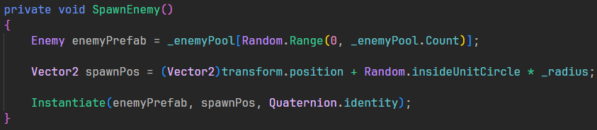
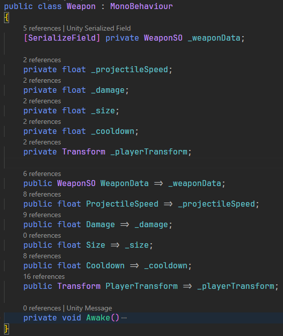
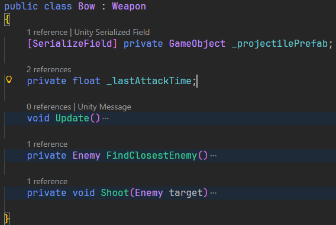
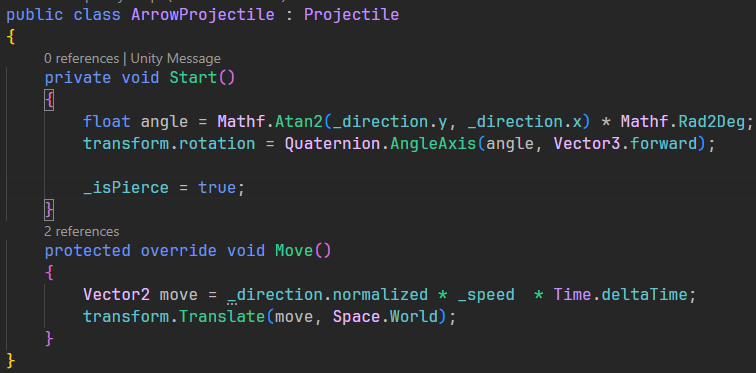

Diania

C#
Unity
OOP
Events
Coroutines
UI
Animations
Introduction
Rogue-like, Vampire Survivors inspired game made in Unity. I like these kinds of games and wanted to see how far I could get and see how the different systems were like when making them myself. I managed to make enemies and different pickups and weapons, where the weapon system eventually got a little out of hand and I eventually stopped after the implementation. I learned a lot more about structuring things beforehand and planning out the features you want in a project before jumping into the code. I also got to work a lot more with UI and animations.
Enemies

The enemies Always move towards the player's position. Using a 2D collider, the enemies can detect collision with the player and projectiles.
Enemies are spawned around the player within a certain radius. Instantiating the random enemy from the pool, makes the spawner spawn different kinds of enemies.
Weapon System
The weapon script holds all the weapon's data that makes each weapon unique.
Each specific weapon is then used to spawn projectiles, to attack the enemies. The specific weapons usually have the find enemy and shoot scripts.
The projectile script holds the movement and collision logic. This makes each different projectile unique with different behavior and gameplay.